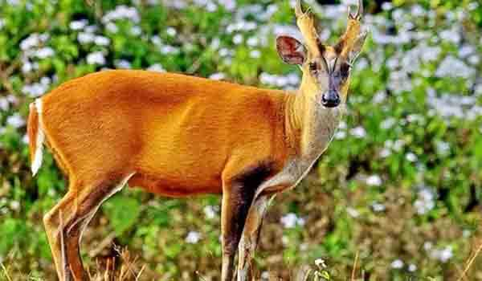
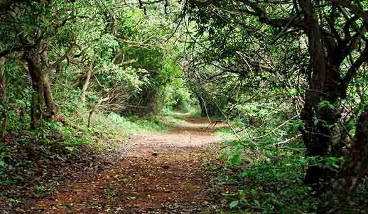

फणसड वन्यजीव अभयारण्य हे महाराष्ट्र राज्यातील, रायगड जिल्ह्यातील मुरुड व रोहा तालुक्यातील वन्यजीव अभयारण्य आहे. ५२ चौरस किमी क्षेत्रावर पसरलेले, फणसड पक्षी अभयारण्य हे महाराष्ट्रातील आणखी एक सुंदर वन्यजीव अभयारण्य आहे. हे तुम्ही भेट दिलीच पाहिजे. येथे बर्याच सस्तन प्राण्यांचे आणि इतर प्राण्यांचे घर आहे. फणसड वन्यजीव अभयारण्य हे फणसड पक्षी अभयारण्य म्हणूनही ओळखले जाते.
फणसड अभयारण्यात २७९ हून अधिक पक्ष्यांच्या प्रजाती आणि ७२० जातींच्या वनस्पती आहेत. काशिद बीचजवळ असलेले पक्षी अभयारण्य हे पर्यटकांचे आणखी एक आकर्षण आहे. अभयारण्यात सुंदर पक्षी पाहिल्यानंतर आपण समुद्रकाठी आराम करू शकतो.
भेट देण्याची उत्तम वेळः
फणसड पक्षी अभयारण्य भेट देण्याचा उत्तम काळ नोव्हेंबर ते मार्च या कालावधीत आहे.
स्थानः
रायगड जिल्हा, महाराष्ट्र.
सफारीची वेळः
अभयारण्यात जाण्याची वेळ सकाळी ८ ते रात्री ८ या वेळेत आहे.